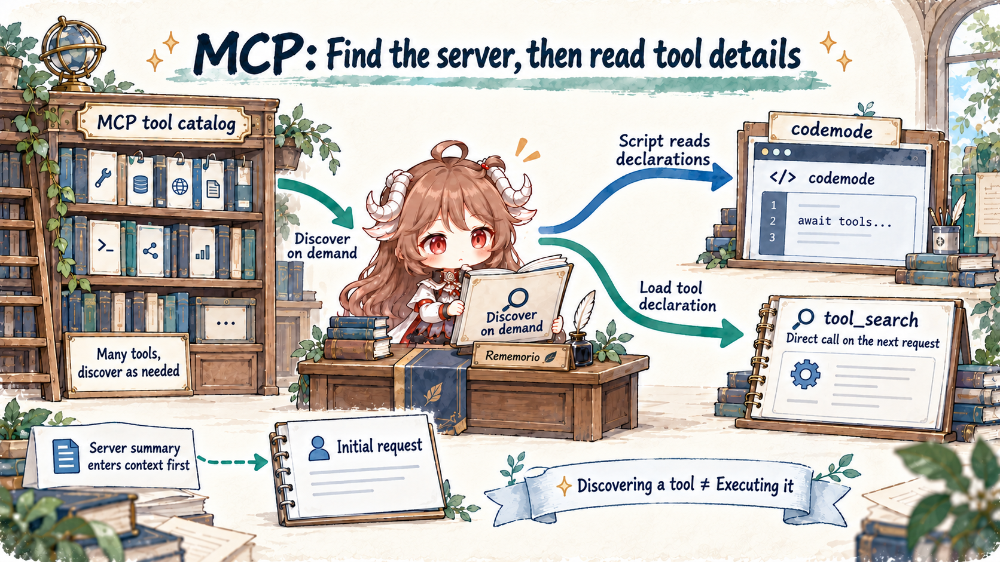
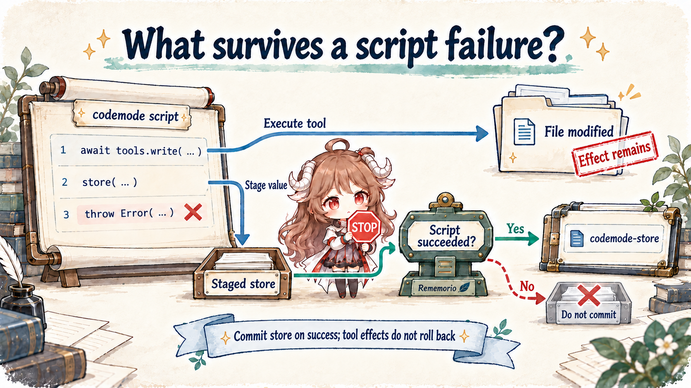

Reading contract: follow “read three test reports and return only failed cases” to see where scripts run, how tools are discovered, what reaches the model, and what survives a script failure. Start with the Pi overview for the loop and session, or the context chapter for shortening logs already in history.
This chapter follows the public implementation of Pi 1.0.0. Codemode, tool search, and MCP became built-in extensions in 0.99; 1.0 further changed declarations, background connections, and model calls. The scope is the stable CLI path at v1.0.0. SDK sessions require explicit extension setup. Examples explain data flow; they are not measurements of latency, cost, or task success.
1. Let the script read reports before the model judges failures
Suppose tests produce three JSON reports, each containing hundreds of passing cases and a few failures. A model could call read for each report and search the long output. Yet most of that work is parsing JSON, filtering arrays, and collecting fields. Sending every intermediate record into the conversation consumes input and makes important errors easier to miss.
Codemode lets the model write JavaScript first. The script reads reports, filters records, and explicitly emits a compact result. The model still decides what to do and how to interpret failures; the script performs mechanical data processing. Tool calls retain their real effects, but their raw results first reach the script instead of automatically becoming the next model messages.
const paths = ["reports/unit.json", "reports/api.json", "reports/ui.json"];
const reports = await Promise.all(paths.map(async (path) => {
const raw = await tools.read({ path });
const report = JSON.parse(raw);
return {
path,
failed: report.tests
.filter((test) => test.status === "failed")
.map(({ name, error }) => ({ name, error })),
};
}));
text(reports);The example assumes a tests array and files small enough for read to return complete, directly parseable JSON. It does not create a file interface that bypasses tool limits: a truncation notice, missing file, or unexpected format still breaks the script. The three reads can be submitted concurrently, while the host’s tool scheduling policy still affects their execution order.
The input to codemode is raw JavaScript, executed as an async function body with top-level await. text(), image(), and top-level return select what reaches the model. Computing a local variable alone does not emit it. See the Codemode documentation for the interface.
2. Discover tools before choosing how to call them
Replace local reports with a test-platform query, and the data may come from an MCP server. One server can offer hundreds of tools. Including every argument declaration in every request means carrying an entire manual even when a task needs two queries. Pi separates knowing that a server exists from obtaining a particular tool’s declaration.
MCP tools default to codemode exposure: the model first sees a server summary, and a script searches for tools and reads declarations. The other entry point, tool_search, loads matching tools as direct declarations for subsequent requests. These mechanisms decide when descriptions enter context. Discovery itself neither executes a query nor grants additional permission.

const matches = await searchTools("failed test runs", { namespace: "mcp__tests" });
text(matches);
if (matches[0]) text(await describeTool(matches[0].name));The tests namespace is hypothetical, and this example only discovers and inspects a tool. After reading its real declaration, the model can supply valid arguments in a later script. Names and parameters should not be guessed from prose. Scripts can also inspect ALL_TOOLS or use describeNamespace for a server’s summary, instructions, and tool names.
| Exposure | Initial request and later access | Useful for |
|---|---|---|
| codemode (default) | Neither directly declared nor inlined into the codemode description; scripts discover it. | Combining calls and filtering large results. |
| deferred | tool_search loads a direct declaration for the next request; scripts can also call it. | Discovering a tool before a direct model call. |
| direct | Declared directly and also callable from scripts. | Small, frequently used tool sets. |
| hidden | Registered but unreachable. | Explicitly disabled tools or servers. |
The MCP documentation also defines per-tool overrides: exact names take precedence over wildcard rules, and the first matching wildcard wins. Exposure need not be uniform across a server. Declarations loaded by tool_search are recorded on the conversation branch. Script access to indirect tools does not depend on the currently declared tool list. Resuming or navigating the tree therefore has an explicit source for both availability and declaration history.
2.1 Why background connections should not keep rewriting old requests
Pi connects MCP servers in the background when a session starts. The first prompt waits up to ten seconds only for servers with direct tools, whose declarations belong in that request. Other servers are awaited when discovery or execution needs them: explicitly naming an MCP server waits for that server; searching all tools, reading ALL_TOOLS, or using tool_search waits for all servers.
Default indirect tools stay outside the codemode description, so new connections do not continually enlarge that declaration. When server summaries change, Pi appends the updated mcp_servers section at prompt start. This reduces changes to earlier content. Actual cache hits still depend on request contents, provider rules, and cache lifetime; append-only updates do not establish a hit rate.
2.2 CLI defaults and SDK setup are separate decisions
The CLI’s MCP extension activates codemode when a codemode server connects and activates tool_search for deferred servers. Without MCP, +codemode can be added to defaultTools. codemode.mode: "on" keeps declared tools; "only" moves them behind the script entry point. The SDK documentation states that SDK sessions do not load built-in extensions automatically: the resource loader must receive the corresponding factories. CLI setup is not a default behavior of the low-level Agent.
3. Scripts affect the outside world through the same tool path
Generated scripts run in an isolated QuickJS worker with a fresh VM for each call. There are no Node APIs, file system, network, or timers. External access goes through tools or models. This limits direct access to the host and gives it explicit requests to observe.
In coding-agent, tools calls use ctx.executeTool() to reach AgentSession’s nested tool execution. Argument validation and extension handlers before and after execution use the ordinary tool pipeline. Child calls carry a parentToolCallId linking them to codemode. The script adds a layer for organizing calls without removing host control over them.
Model issues a codemode call
→ QuickJS executes JavaScript
→ tools.<name>(args) requests host execution
→ Validate / extension tool_call / execute / extension tool_result
← Convert result into a script value
→ text() / image() / return select output
← Codemode result enters later model contextThe VM and the tools have different capabilities. A script has no file system, but write still modifies files; it has no network API, but an MCP tool may contact a remote service. The security documentation says Pi has no built-in per-call approval or sandbox. Permission extensions can intercept calls; actual isolation depends on the host and tool environment. MCP annotations such as readOnlyHint and destructiveHint are server-provided hints, not proof that an operation is safe.
execute.ts attaches bounded nested-call summaries to the outer result for display and inspection. They are not a complete archive of every raw tool response. Preserve required reports, change evidence, or audit data in explicit files or storage; do not assume that content filtered out by a script can always be recovered from the conversation.
4. Distinguish three failure layers before reducing output
Returning only failed tests seems straightforward, but “the script did not throw” does not establish that all tests passed. Tools have different result conventions. Callers must establish operational success before filtering business data.
| Call | Script result | What to check |
|---|---|---|
| read / edit / write | Text output. | Rejected calls, truncation notices, and expected format. |
| bash | Structured output, exit_code, truncated, and related fields. | Nonzero exits can resolve normally; inspect exit_code. |
| MCP tool | Full CallToolResult with content, structuredContent, and isError. | isError can resolve normally; Promise status is insufficient. |
A JavaScript exception is script failure. A nonzero exit or isError is an operational failure. A failed test inside a valid report is business data. Collapsing all three into “no failed records” could turn a broken query into a false claim that tests passed.
const results = await Promise.allSettled([
tools.bash({ command: "npm test -- --runInBand" }),
tools.read({ path: "reports/previous.json" }),
]);
text(results.map((result, index) => {
if (result.status === "rejected") {
return { index, error: String(result.reason) };
}
return { index, value: result.value };
}));allSettled preserves independent successes and failures; bash’s exit code still needs interpretation. Operations that depend on earlier output must run sequentially. Writes to the same file or remote object also require ordering rather than a reflexive Promise.all. Concurrency overlaps independent waits; it does not establish business correctness.
Large output has separate limits at separate stages. Direct MCP text over 20 KB loses its middle and points to a complete temporary file; codemode can receive the complete MCP result and filter it first. The script’s final output defaults to 10,000 estimated tokens, retaining the beginning and end when exceeded and linking complete text. bash has its own 1 MiB limit inside scripts. A VM has 256 MB of memory, so moving processing into a script does not permit unbounded accumulation.
5. What survives when a script fails?
Suppose a script writes a proposed fix to a file, stores a report cursor, then throws while parsing another report. It is tempting to treat this as an atomic transaction in which failure cancels everything. Pi does not provide that rollback for tool effects.

store(key, value) stages small JSON values; load(key) reads the script’s current small state: it starts from earlier successful writes on the active branch, and store updates become readable within the same script. executeCodemode appends a codemode-store custom entry only after success. Resuming replays writes from the branch root. Failed scripts do not commit their new store updates, but retain partial output already emitted and report the script error.
The store suits cursors, IDs, and summaries. One value may contain at most 262,144 JSON characters, with 1,048,576 characters across all values. Image data does not belong there. A branch sees only writes on its path; external files and remote systems do not automatically return to an earlier version. Cross-system consistency still requires idempotency, explicit checkpoints, or compensation.
When a script ends, unawaited promises are discarded and running tool calls receive cancellation. Starting a write and immediately returning does not confirm that the write completed. Await required results. Timely cancellation depends on each tool, and completed effects remain.
6. What classifiers and image models add to a script
The same processing path can use non-chat models: classify failed feedback, or generate a figure from selected results. The models interface queries the catalog and runs classifier and image models with session credentials. Chat models can be listed but cannot be run from scripts. This does not automatically start another conversational sub-agent.
The model-call contract requires checking stopReason and errorMessage: provider errors can return as values instead of throwing. At most four classifier or image calls execute concurrently per script; additional calls queue. Usage contributes to the codemode result and session cost. Emit images with image(block); printing base64 produces enormous text the model cannot read as an image.
A classifier supplies a model judgment. If that judgment hides failures or authorizes archiving reports, retain uncertain cases and validate misclassification. A structured field alone does not establish reliability. Codemode changes where intermediate work happens; the task still needs its own acceptance criteria.
7. When is a script the right unit of work?
| Task shape | Prefer | Property to preserve |
|---|---|---|
| One call with a short result | A direct tool call. | Clear errors and visible results. |
| Independent reports requiring filtering or aggregation | Codemode for reads and deterministic processing. | Source and success/failure for each input. |
| Many tools with unknown interfaces | Discover first, then choose direct calls or a script. | Real declarations and current availability. |
| Long history no longer needs its full text | ContextEdit or compaction. | Raw records, branch semantics, and consistent recovery. |
| Several external writes | Dependency ordering, idempotency, and checkpoints. | Verify effects separately from script success. |
Evaluate the design on the same reports: does it produce the same answer, how many failures are missed, how much model input and output is used, what is the full elapsed time, are tool failures interpreted correctly, and does a resumed cursor correspond to completed work? A shorter result is only the first step. The transformation is worth retaining when the task remains correct.
Together with the previous chapter, Pi offers two distinct intervention points. Codemode selects data before tool results enter model messages; ContextEdit changes future input after history is recorded. Both make evidence retention and model visibility explicit decisions, and both require a separate account of effects already performed outside the model.